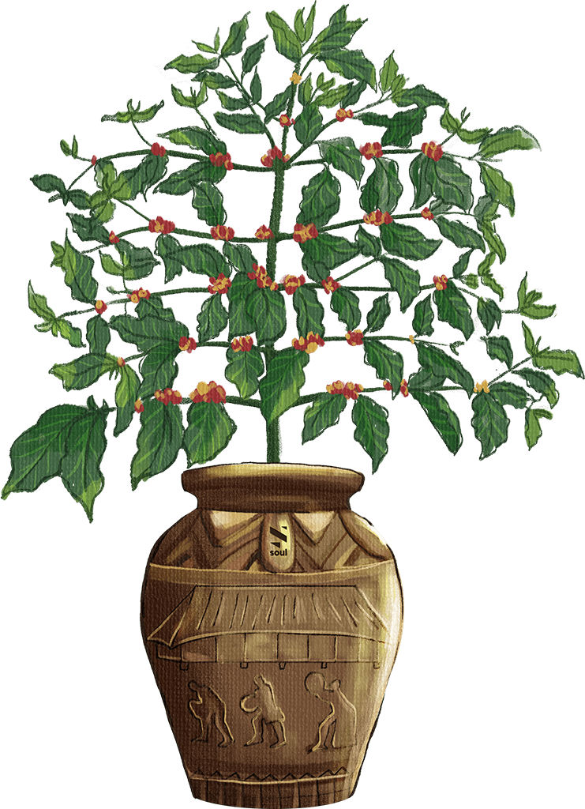

Minh họa quy trình chế biến | Soul specialty coffee
Chế biến cà phê là quá trình loại bỏ các lớp vỏ, thịt, nhớt và vỏ trấu bao quanh hạt cà phê – nguyên liệu thô mà người nông dân sẽ bán. Cách người trồng chọn phương pháp chế biến sẽ ảnh hưởng lớn đến hương vị cuối cùng của cà phê.
Video quy trình chế biến
Bước 1:
Thu hoạch và chọn lọc – Quả cà phê được hái chín và chọn lọc kỹ để đảm bảo chỉ những quả tốt nhất được đưa vào sản xuất.
Thu hoạch và chọn lọc – Quả cà phê được hái chín và chọn lọc kỹ để đảm bảo chỉ những quả tốt nhất được đưa vào sản xuất.
Bước 2:
Tách vỏ – Vỏ quả được loại bỏ bằng máy tách vỏ. Quá trình thu hoạch và chế biến luôn được kiểm soát nghiêm ngặt. Soul lấy cảm hứng từ văn hóa Tây Nguyên, sử dụng nguyên liệu bản địa trong chế biến cà phê và thử nghiệm nhiều phương pháp khác nhau.
Tách vỏ – Vỏ quả được loại bỏ bằng máy tách vỏ. Quá trình thu hoạch và chế biến luôn được kiểm soát nghiêm ngặt. Soul lấy cảm hứng từ văn hóa Tây Nguyên, sử dụng nguyên liệu bản địa trong chế biến cà phê và thử nghiệm nhiều phương pháp khác nhau.
Bước 3:
Lên men với rượu cần Tây Nguyên
Lên men với rượu cần Tây Nguyên
Bước 3:
Lên men với trái cây bản địa: chuối, táo, dứa...
Lên men với trái cây bản địa: chuối, táo, dứa...
Bước 3:
Lên men với bia thủ công Đắk Lắk
Lên men với bia thủ công Đắk Lắk
Bước 4:
Phơi – Phơi hạt trên giàn
Phơi – Phơi hạt trên giàn
Bước 5:
Xay xát – Sau khi phơi khô, cà phê được chuyển đến nhà máy xay xát, nơi hạt và vỏ quả được tách ra bằng máy xay xát sử dụng ma sát để loại bỏ lớp vỏ trấu.
Xay xát – Sau khi phơi khô, cà phê được chuyển đến nhà máy xay xát, nơi hạt và vỏ quả được tách ra bằng máy xay xát sử dụng ma sát để loại bỏ lớp vỏ trấu.



Thank for watching!
Contact for works: contact@manhhuynh.work